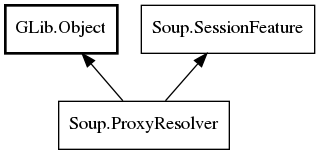

Soup.ProxyResolver Reference Manual
Packages
libsoup-2.4
Soup
ProxyResolver
get_proxy_async
get_proxy_sync
ProxyResolver
Object Hierarchy:

Description:
[
Deprecated
( replacement =
"Soup.ProxyURIResolver"
) ]
public
interface
ProxyResolver
:
Object
,
SessionFeature
Warning:
ProxyResolver is deprecated. Use
Soup.ProxyURIResolver
.
Namespace:
Soup
Package:
libsoup-2.4
Content:
Methods:
public
abstract
void
get_proxy_async
(
Message
msg,
MainContext
async_context,
Cancellable
? cancellable,
ProxyResolverCallback
callaback)
public
abstract
uint
get_proxy_sync
(
Message
msg,
Cancellable
? cancellable,
out
Address
addr)